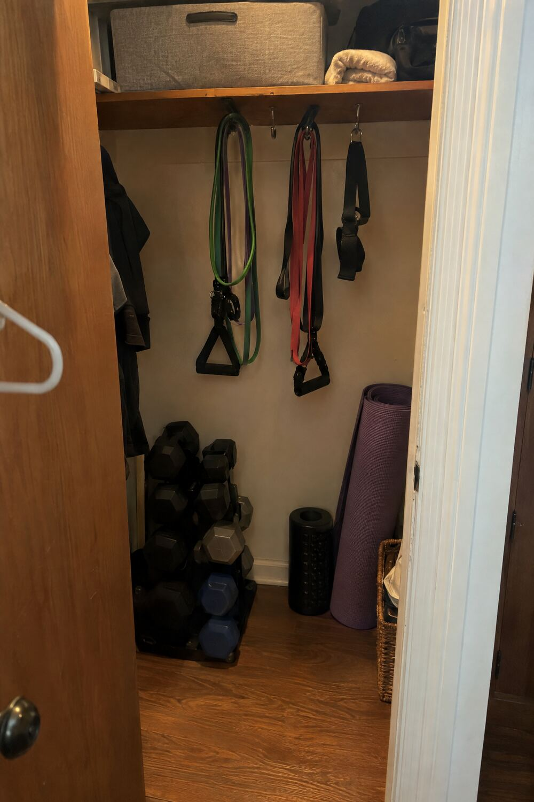

Most apartment closets have a few feet of dead floor space under the hanging rod — just enough for a hook set, a small dumbbell rack, and a rolled mat standing in the corner. No shelving needed, no permanent install, and it stays out of sight the second you shut the door.
Loop bands over the existing closet rod instead of mounting a hook — zero holes, and they slide off in seconds when you need the rod for actual clothes.
Keeps hex weights off the floor and stacked in one footprint, so they don't roll around every time you open the door.
Standing it in the corner rather than laying it flat saves the most floor space — the difference between fitting a closet gym and not.